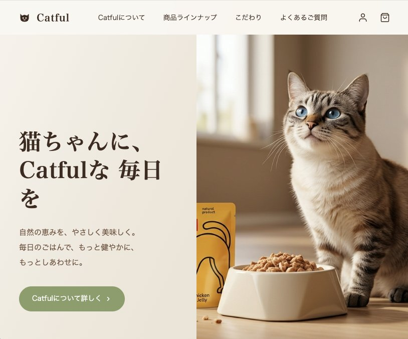
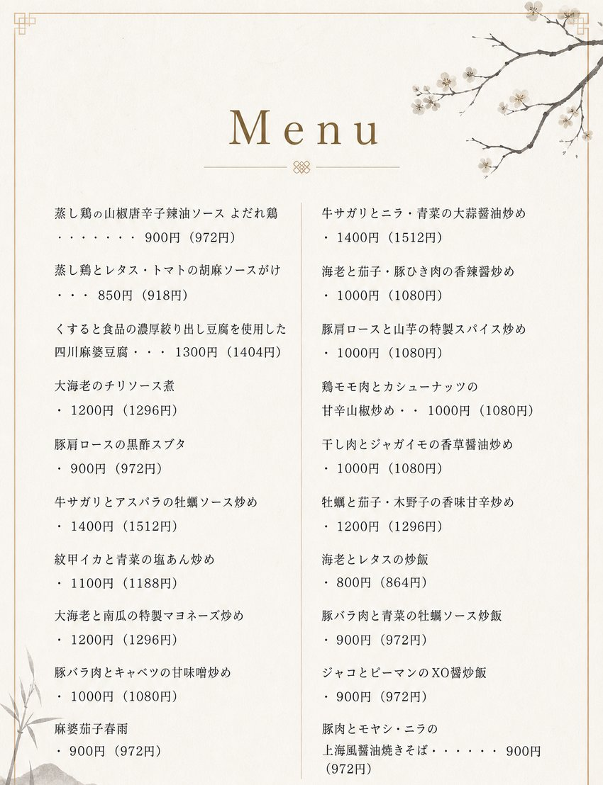

Kiyo Uchida です。お店やサービスのための動画や画像を、AIを使ってつくっています。撮影や大きな予算がなくても、伝わる一枚・一本を。むずかしいことは、ぜんぶこちらで。
WORKS

ブランド・Webページ
Catful ブランドサイト
架空のキャットフードブランド「Catful」を題材に、ブランドの世界観からサイトまで一から作ったオリジナルのコンセプト作品です。オーガニック志向の、やわらかでナチュラルな雰囲気を表現しました。
ChatGPT Image ・ HTML
サイトを見る ↗

お店のツール
飲食店 デジタルメニュー
レジ横の紙のテイクアウトメニューを見て、QRコードで開けるデジタルメニューを制作。印刷の手間をなくしてお店の負担を軽くしつつ、お客さんもその場でサッと選べる形にしました。
デザイン ・ HTML / SVG
動画
Catful プロモーションビデオ
Catfulブランドの世界観に合わせた、ナチュラルでやさしいトーンのプロモーション動画。サイトと同じ空気感でそろえ、静止画から動きのある表現までワンストップで制作できることを示した一本です。
Seedance 2.0 ・ Kling
▶ 押すと再生できます
WHAT I CAN DO
SNS用の動画・画像
InstagramやTikTokに使える短い動画、投稿用の画像。お店の魅力が伝わる一本を。
商品・メニューの画像
商品の見せ方、メニュー画像、ポスター。撮影できないものも、かたちにできます。
お店のブランドづくり
ロゴや世界観、Webページまで。「お店らしさ」をまるごとお手伝いします。
ABOUT
「こんなこと、できる？」だけでも大丈夫です。
鹿児島の小さなお店も、大歓迎です。